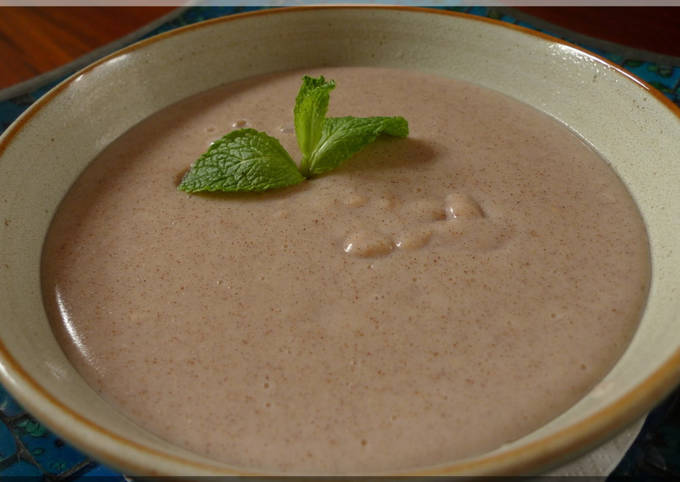

How to make Uji

Description
Traditional Kenyan uji is wholesome, nutrient-dense, and the perfect way to start your morning.
Here's how to make it.
- 1 cup each of ground millet and sorghum
- Half a cup of maize flour
- 3 cups of water
- Bring the 3 cups of water to a boil in a pot
- Put 2 cups of cold water in a bowl and mix the millet, sorghum, and maize flour in it
- Add the mix to the boiling water and cook while continuously stirring slowly to avoid lumping
- Cook for 8 to 10 minutes
- The uji is now ready to eat. Served mixed with flaxseed, chia, or any other additions you want